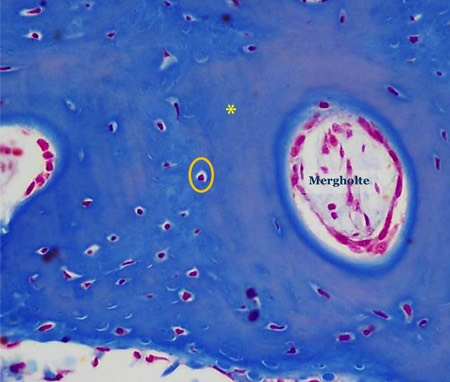

A. De botmatrix
Ook bij botweefsel bestaat de extracellulaire matrix uit weefselvloeistof (weinig), grondsubstantie (weinig) en bindweefselvezels (veel, voornamelijk de stevige bundels van collageen type I vezels). We kunnen deze vezels echter niet afzonderlijk zichtbaar maken in lichtmicroscopische preparaten. Daarenboven zijn in volwassen bot de anorganische componenten calcium en fosfaat afgezet (onder de vorm van hydroxy-apatiet kristallen). Deze verkalking geeft het bot zijn stevigheid maar zorgt er tevens voor dat diffusie van weefselvloeistoffen doorheen de matrix niet mogelijk is (zie verder bij osteocyten).
Wanneer de matrix nog niet is verkalkt (onvolwassen botweefsel) noemen we deze osteoïd.
Ook bij botweefsel bestaat de extracellulaire matrix uit weefselvloeistof (weinig), grondsubstantie (weinig) en bindweefselvezels (veel, voornamelijk de stevige bundels van collageen type I vezels). We kunnen deze vezels echter niet afzonderlijk zichtbaar maken in lichtmicroscopische preparaten. Daarenboven zijn in volwassen bot de anorganische componenten calcium en fosfaat afgezet (onder de vorm van hydroxy-apatiet kristallen). Deze verkalking geeft het bot zijn stevigheid maar zorgt er tevens voor dat diffusie van weefselvloeistoffen doorheen de matrix niet mogelijk is (zie verder bij osteocyten).
Wanneer de matrix nog niet is verkalkt (onvolwassen botweefsel) noemen we deze osteoïd.

Foto van botweefsel waarin je vooral veel extracellulaire botmatrix (gele asterisk) ziet die blauw gekleurd is. De afzonderlijke collageenbundels kan je niet waarnemen. Eén van de osteocyten is omcirkeld in het oranje.
In het bot vind je soms holten terug waarin losmazig bindweefsel zit. Dit noemen we de mergholten omdat deze veelal gevuld zijn met beenmerg.
Vordering zelfstudie botweefsel: